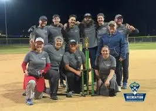
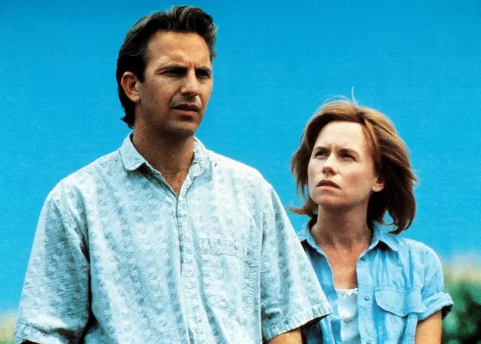
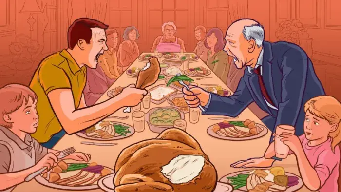
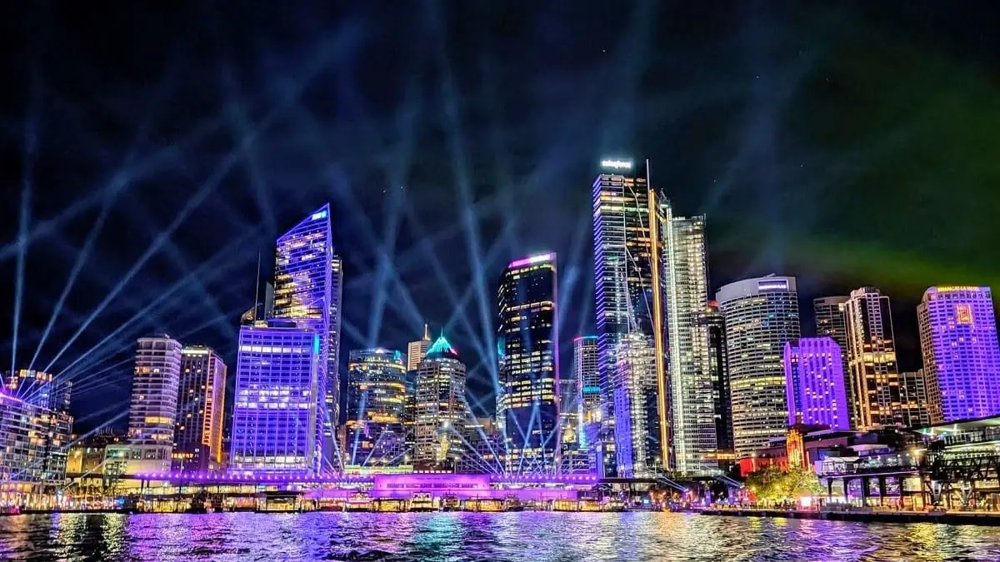
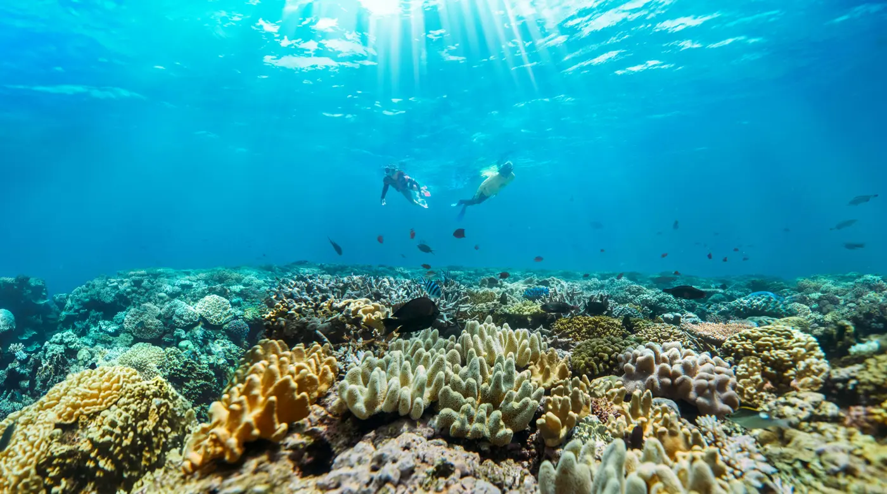

04
The Story
Three parts. Australia is the heart of it.
PART 1 · NOV
Home



- Cold open
A deadline all-nighter with AI, then the awful morning after.
- Durham
After our softball championship, I tell my teammates at the bar I want to make a film.
- Home
My wife and I watch the Field of Dreams "you're nuts, but do it" scene. Her verdict: "That guy's nuts."
- Duke
My advisor and lab on everything they're counting on me for.
- New York
Thanksgiving with the skeptics: family, Grandma (my small investor), the Reverend I did community service with, my old recovery house director.
- Florida
Grandpa, 97.
Durham → Sydney
PART 2 · DEC
Australia
THE MAIN EVENT
ML4H, a smaller healthcare AI conference · Dec 6–7
- I present a friend's poster, my way in.
- I meet people paying strangers to present their posters.
- I confront the author of a paper we think is AI slop. If they won't go on record, we change their face with AI.
NeurIPS, the world's biggest AI conference · Dec 6–12
- I capture the spectacle: poster halls, company booths, the crowds.
- I spend a day with each of three people:
The international studentTheir career, and maybe their visa, rides on one poster.
The high schoolerAlready publishing at the biggest AI conference. How, and why?
The almost-graduateHunting for a job in a market built on paper counts.
- The night ends at a tech company's after-party.
Sydney → Queensland
PART 3 · DEC
The Reef

A few days snorkeling, at peace, about to be a dad. Then home.